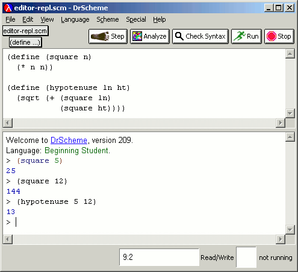
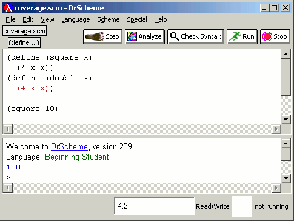

DrScheme makes it easy to cleanly encapsulate program test cases. For instance, consider the same program as before:
|  |
Because the REPL clears on each Run, it becomes tedious to repeatedly type tests in the REPL. The programmer can instead embed tests in the program source using Special | Insert Test Case. Each test can have a descriptive label followed by the test expression and the expected answer. These last two boxes can contain arbitrary Scheme code:
Clicking Run flags the correctness of each test:
The full test can consume a good deal of screen space, but the programmer can always collapse a test by clicking on the triangle, leaving just the descriptive label and an indication of whether the test passed or failed:
In the student language levels, DrScheme will automatically indicate expression coverage of programs. This is a useful baseline for students and instructors to determine whether a program has been tested adequately. When an expression has not been exercised, DrScheme highlights it in red, leaving the rest of the code in black:
|  |
If, however, all the expressions have been tested, the editor reverts to full code coloring:
The coverage presentation does consider tests in embedded test cases.
Thus, if a test only exercises square, then DrScheme presents
the program text in black, highlighting the unexercised body of
double: